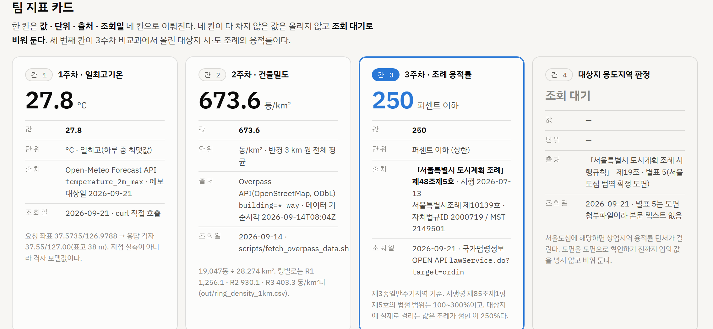
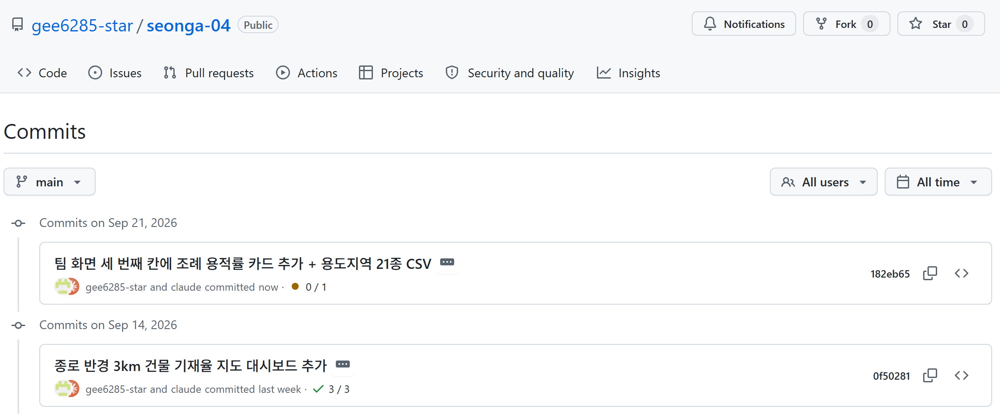

| 번호 | 과제 | 결과 | 무엇을 했고 어디서 확인되는가 |
|---|---|---|---|
| ① | 세 번째 칸에 용적률 카드 — 값·단위·출처·조회일 네 칸 |
완료 | 값 250 · 단위 퍼센트 이하(상한) · 출처 「서울특별시 도시계획 조례」 제48조제5호 시행 2026-07-13 · 조회일 2026-09-21. 네 칸을 카드 안에 이름표와 함께 표시했다(아래 갈무리) |
| ② | 커밋으로 남기고 GitHub 저장소 화면에서 확인 |
완료 | 커밋 182eb65 "팀 화면 세 번째 칸에 조례 용적률 카드 추가 + 용도지역 21종 CSV". github.com/gee6285-star/seonga-04/commits/main 화면에 보인다(아래 갈무리) |
| ③ | 조례 건폐율·용적률 21종 CSV를 저장소에 둠 |
완료 | data/seoul_zoning21.csv (동봉 3주차_비교과_용도지역21종.csv). 값을 손으로 옮기지 않고 scripts/build_zoning21.ps1이 조문 원문에서 뽑는다 |
| ④ | 커밋에 인증키가 섞이지 않았는지 열어 확인한 기록 한 줄 |
완료 | 키점검로그.md에 한 줄로 남겼다. 실제로 두 건을 고쳤다 — 아래 ④ 항목 |


도시지역 16종은 조례가 정하고, 관리·농림·자연환경보전 5종은 서울시 조례에 없어 영 기준만 적는다
| 용도지역 | 영 상한 건폐/용적 | 조례 건폐/용적 | 서울 도심 |
|---|---|---|---|
| 제3종일반주거 | 50 / 300 | 50 / 250 | — |
| 준주거 | 70 / 500 | 60 / 400 | — |
| 중심상업 | 90 / 1,500 | 60 / 1,000 | 800 |
| 일반상업 | 80 / 1,300 | 60 / 800 | 600 |
| 계획관리 | 40 / 100 | 조례 미규정 | — |
21종 전부와 근거 조문·시행일·조회일은 동봉 CSV에 있다. 3주차 본수업에서 수기로 만든 표와 21종 모두 값이 일치했다.
남는 주의점 — 국가법령정보 OC는 가입 이메일의 @ 앞부분이라 GitHub 사용자명에서 유추될 수 있다. 등록한 IP에서 호출할 때만 응답이 오지만 코드에 적지 않는 원칙은 지켰다. · 배포 주소는 현재 비공개다. 링크를 받은 사람이 열려면 페이지 공유 메뉴에서 "링크가 있는 모든 사용자"로 바꿔야 한다. · 도구 — 법령 MCP 서버가 연결돼 있지 않아 MCP가 부르는 것과 같은 국가법령정보 OPEN API를 scripts/fetch_law_articles.ps1로 직접 호출했다(자치법규 target=ordin). 받은 값과 네 단계는 같다.